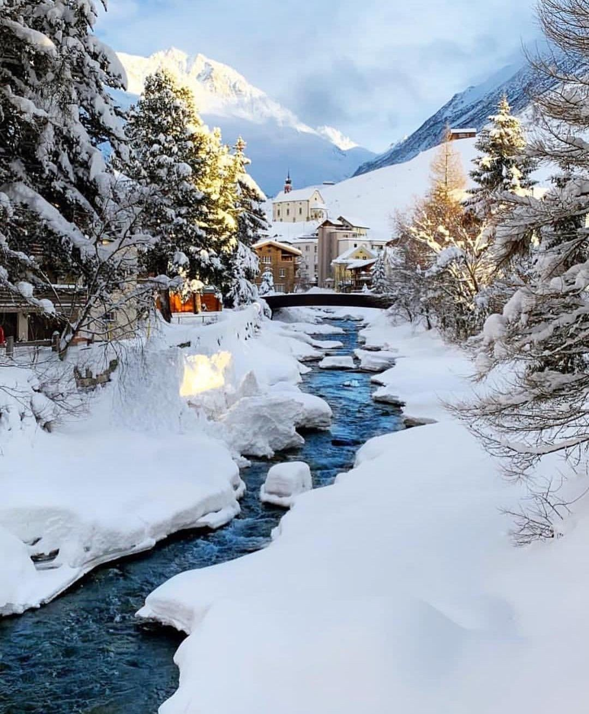
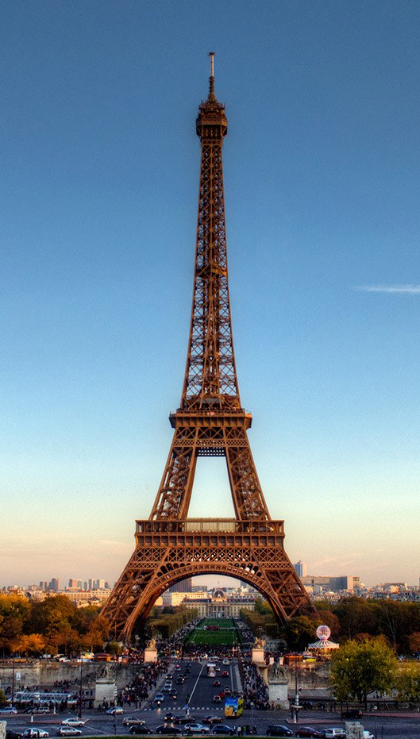
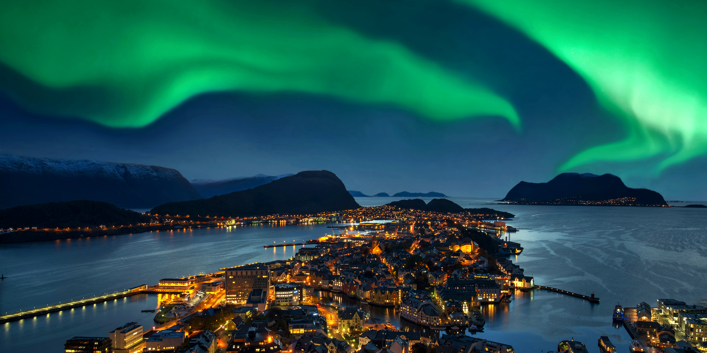
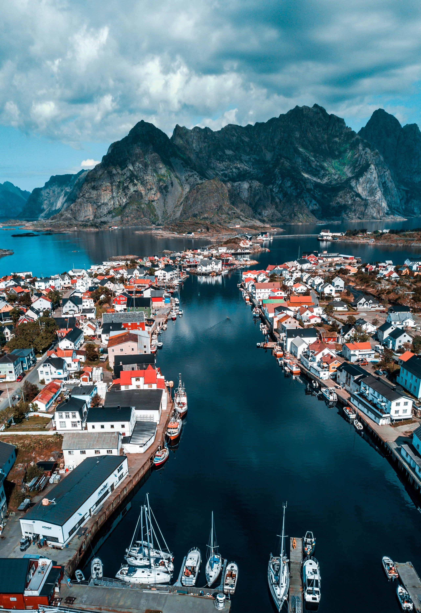
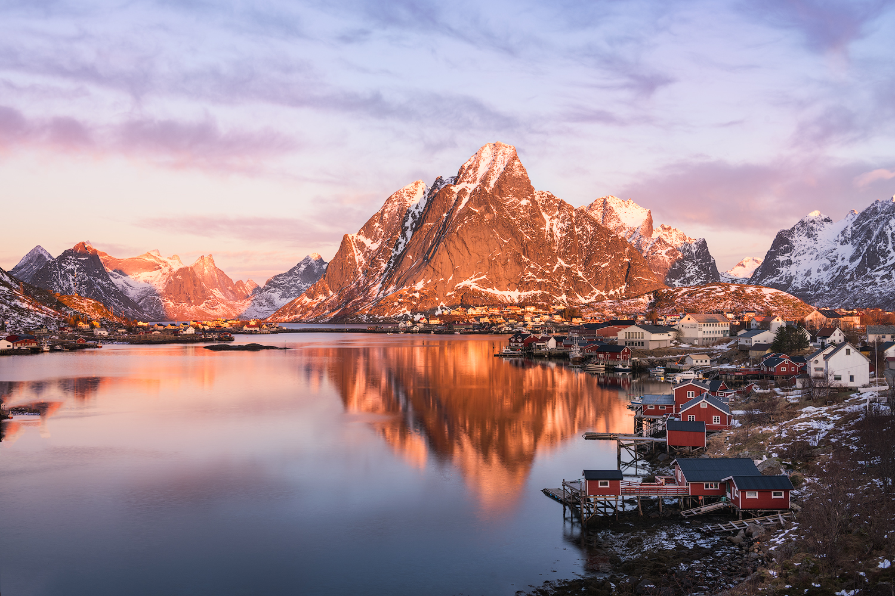

Country facts
Switzerland
Switzerland is a beautiful country and is a popular desitnation in the winter due to it's mountainous landscape and snowy city scenes.
Switzerland is bordered by Italy to the south, France to the west, Germany to the north and Austria and Liechtenstein to the east. It is geographically divided among the Swiss Plateau, the Alps and the Jura...

Paris
Since the 17th century, Paris has been one of the world's major centres of finance, diplomacy, commerce, fashion, gastronomy, science, and arts, and has sometimes been referred to as the capital of the world or "the City of Light".
France
Norway
   click to read moreThe capital of Norway, which is also officially called the Kingdom of Norway, is Oslo, which is also the largest city.
Norway is bordered by Finland and Russia to the northeast and the Skagerrak strait to the south, on the other side of which are Denmark and the United Kingdom. Norway has an extensive coastline, facing the North Atlantic Ocean and the Barents Sea.